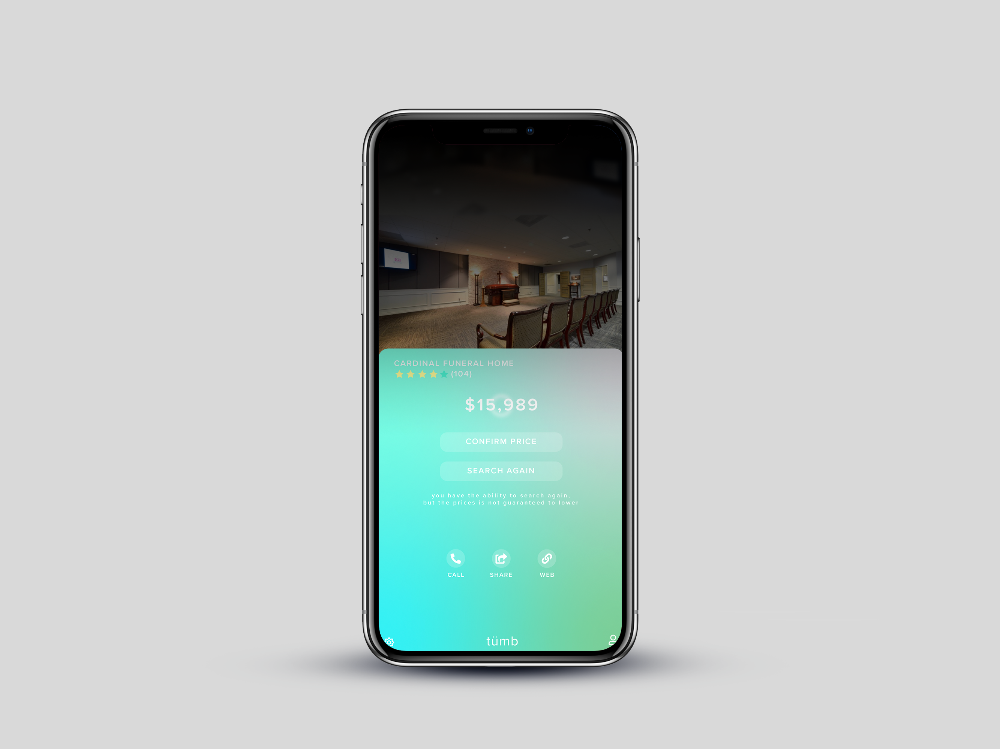

Tümb
Venture Type: Mobility
**This project was created with the intent of imagining what technology or service we could see appearing within the next 10 years based on current trends.
The Problem:
According to data from 2015, “the on-demand economy is attracting more than 22.4 million consumers annually”. The same report also noted that these consumers are spending $57.6 billion each year (Bell & Colby, 2016).Of the 22.4 million consumers contributing to this on-demand economy, 49% are millennials, between the ages of 18 and 34 (Bell & Colby, 2016). With the growing demands of this generation, millennials may expect to do everything at the click of a button on their mobile device to save both time and money. In turn, all industries will continue to be impacted. One industry in particular, the funeral industry, may be impacted as consumers seek to save time and money during a stressful life moment that on average, costs around $8,500. *This problem is anticipated to occur within the next 10 years as on-demand services expand further.
Target User:
• Millennials (anyone born between 1981 and 1996) in the year 2029The Solution:
Tümb is a mobile application that enables users to quickly begin planning funeral arrangements for a loved one at the cheapest cost possible without having to rely on one particular funeral home. At its core, the application was designed to connect funeral homes with families to arrange the transportation for a loved one quickly and inexpensively.
Key Features:
• Request transportation for loved one
• Enable funeral homes to compete in real-time to provide best pricing for services
Future Opportunities:
• Ability to connect to loved one’s bank to instantly notify them of someone’s passing to freeze all accounts and assets
My Role
Tümb was an outrageous, yet alarmingly possible mobility product I came up with while brainstorming, "What if we could apply the Uber model to something else?" While it seemed satirical, I quickly learned in the research phase that the ‘Uber for funerals’ model was already being built and piloted in both Australia (Picaluna) and Russia (UMER).
In a team of two, my role involved determing a strategy for the product including researching the likelihood of its success, anticipating trends in the on-demand economy, as well as researching competitors. I designed the website (landing page) seen in the top photo on this webpage as well as I worked with a classmate to design the product's interface as well as develop an interactive prototype.
Core screen showing cheapest price offeredThis screen would also enable users to search again (similar to the practice currently done by ride-share passengers) to find a cheaper rate. 
References:
The On-Demand Economy Is Growing, and Not Just for the Young and Wealthy by Kelly Bell and Charles Kolby
Breaking Down The Cost of a Funeral In Canada
- Adobe Illustrator
- Adobe Photoshop
- InVision